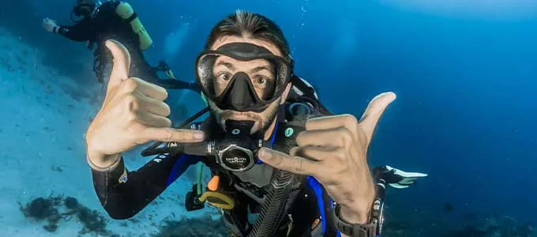
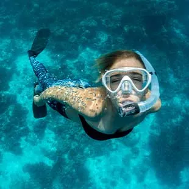

WELCOME TO SOLYMAR PARACAS
Tours in Paracas: Live Unforgettable Experiences
Discover the majesty of Paracas and Pisco with tours designed just for you. Connect with nature through adventure activities with safety guaranteed.
Best Adventure Activities
in Paracas
We select the best routes to guarantee you an authentic experience with certified guides.

Ballestas Islands Tour
Cruise the "Peruvian Galapagos" and spot sea lions, Humboldt penguins, and thousands of marine birds.
Paracas National Reserve
Explore colorful desert cliffs and unique shorelines like Red Beach where the dry dunes meet the ocean.

Paracas Full Day
The ultimate classic day trip: visit the Ballestas Islands by boat in the morning and the Reserve by land at noon.

Huacachina Buggy & Sandboarding
Feel the adrenaline racing through giant sand dunes in tubular buggies and sliding down on sandboards at sunset.

Scuba Diving
Dive into the deep ocean with certified PADI instructors in the highly biodiverse waters of Paracas.

Surface Snorkeling
Explore underwater gardens and the vibrant marine life of the bay easily and at the best price.

Paragliding Flight
Fly over the majestic coast of the National Reserve and feel the freedom of tandem paragliding.

Golden Shadows Trek
Hike along ancient coastal cliffs of the desert and catch the golden sunset over the Pacific.

Nazca Lines Flight
Fly high over the enigmatic ancient geoglyphs etched forever into the dry sands of Nazca.

Yakupark Water Park
Have giant fun sliding, jumping, and racing in the largest inflatable water park in South America.

Pisco Route in Ica
Visit historic and artisanal wineries in the Ica valley with guided tastings and delicious Creole food.
SolyMar Paracas: Your Trusted Agency
At SolyMar Paracas, we don't just organize excursions; we design memorable adventures that respect and celebrate our bay's unique ecosystem. We are a local agency with years of experience guiding travelers from all over the globe.
Our commitment is to offer you high-quality service with transparent rates and no surprise fees. We work alongside guides authorized by SERNANP and DIRCETUR, ensuring educational, safe, and respectful visits to the protected species of the Ballestas Islands and the Paracas National Reserve.
Total Safety First
Modern speedboats, certified life jackets, and complete passenger insurance for your peace of mind.
Licensed Local Operator
Registered travel agency recognized by the Peruvian Ministry of Tourism and park authorities.
Personalized Tours
We adapt every itinerary and schedule to your preferences for an unforgettable adventure.
Paracas Travel Guide: Useful Tips
Everything you need to know before packing your bags and visiting the desert and sea of Paracas.
Best time to visit
Paracas is sunny year-round with virtually no rain. The best season for beach and marine activities is from December to April (summer). In August and September, local sandstorms ("Paracas winds") pick up, but boat tours still run normally in the mornings.
How to get from Lima
Comfortable long-distance buses (Cruz del Sur, Oltursa, Peru Hop) connect Lima to Paracas in a 3.5 to 4-hour trip along the South Pan-American Highway. If you are heading to Ica, Huacachina, or Nazca, Paracas is the perfect intermediate stop.
Local Seafood
Fed by the nutrient-rich Humboldt Current, local fish and shellfish are incredibly fresh. Make sure to try a classic Fish Ceviche, a Tiradito, or Seafood Rice at the boardwalk or inside the reserve at Lagunillas Beach.
Frequently Asked Questions
We answer all your questions about bookings, logistics, activities, and safety in Paracas.
payments General Info and Bookings
How do I book a tour and what are the payment methods?
expand_more
Reservations are made directly via WhatsApp for a quick and secure booking. We accept local bank transfers, mobile payment apps, and credit or debit cards through a secure payment link. We do not charge surprise fees.
How far in advance should I book my tour?
expand_more
We recommend booking at least 48 hours in advance, especially during the high season (January to April) or for activities with limited daily spaces such as scuba diving, paragliding, or the Nazca Lines flight.
What happens in case of bad weather or pier closure?
expand_more
Safety is our priority. If the Port Authority closes the El Chaco pier due to high waves or strong winds (affecting the Ballestas Islands tour), we will coordinate immediately to reschedule your tour to the next available departure or issue a 100% refund without administrative fees.
What are the cancellation and refund policies?
expand_more
You can reschedule or cancel your reservation without any penalty by notifying us at least 24 hours prior to the tour time. Last-minute cancellations or no-shows are subject to the loss of the booking deposit.
Do you offer a free luggage storage service?
expand_more
Yes! We have a central office in Paracas. If you arrive early by bus and your hotel room is not yet available, or if you take a tour before departing for Ica/Lima, we store your bags safely and completely free of charge.
explore Ballestas Islands and Paracas National Reserve
What taxes or entrance fees do I need to pay?
expand_more
To do the Ballestas Islands tour, you pay S/ 16 per person (pier fee + SERNANP entry tax). For the Paracas National Reserve, the entry ticket costs S/ 11. If you plan to visit both places, we recommend purchasing the Combined Ticket for S/ 22 (valid for 2 days), which saves you money. Children pay a reduced fee (50%).
Can we land on the Ballestas Islands or swim with sea lions?
expand_more
No. The Ballestas Islands are part of the National Reserve System of Islands, Islets, and Guano Points, a strictly protected area. The boat tour goes around the islands without landing to protect the nesting birds and sea lions. If you wish to swim or snorkel, we recommend our Scuba Diving or Surface Snorkeling tours.
What should I bring for the Ballestas Islands and Reserve tours?
expand_more
For the Ballestas Islands, a windbreaker jacket is essential, as the wind is cold at sea. For the Paracas National Reserve (land tour), we recommend comfortable clothes, closed shoes, sunglasses, a strapped hat, and plenty of sunscreen.
hiking Adventure Sports and Activities
Do I need prior experience or to know how to swim for diving or snorkeling?
expand_more
For Surface Snorkeling, knowing how to float is ideal, though we provide life jackets and you will be accompanied by a certified lifeguard guide. For Scuba Diving, we offer the "PADI Discovery Dive", perfect for absolute beginners. You do not need prior experience, as you will be accompanied one-on-one by a certified instructor underwater.
Is it safe to fly in a paraglider in the Paracas desert?
expand_more
Yes, it is 100% safe. You will fly in tandem with a certified instructor with extensive flight hours and approved equipment. The flight depends entirely on suitable wind currents. If weather conditions are not safe, the activity is postponed or cancelled with a full refund.
Are the adventure vehicles (buggies) safe?
expand_more
Absolutely. At SolyMar, we only operate with licensed, formal dune buggies that undergo regular safety inspections. They feature reinforced roll cages, individual seats with 4-point safety harnesses, and professional drivers with years of experience on the dunes.
What is the difficulty level of the Golden Shadows Trek?
expand_more
The trek has a low-to-moderate difficulty level. It is a guided hike of approximately 2 hours along the desert trails and cliff edges of the National Reserve. It is suitable for the whole family and children from age 8. Sturdy sports shoes are required.
directions_car Logistics and Transport
How do I get to Paracas from Lima or Ica?
expand_more
From Lima, the most popular and comfortable way is to take an intercity bus (such as Cruz del Sur) to Paracas station (about 3.5 to 4 hours of travel). From Ica, the drive takes about 1 hour and 20 minutes. We also offer private door-to-door transfers with air-conditioned vehicles.
Are the tours shared or in private service?
expand_more
We offer both options. The speedboats to the Ballestas Islands and the buggies in Huacachina are shared tours. The land tours to the Paracas Reserve, scuba diving, trekking, and personalized transfers can be booked as private tours for a more exclusive experience at your own pace.
What our adventurers say
"Incredible diving experience. The instructors are very professional. Highly recommended!"
— Carlos Rodríguez
"Golden Shadows Trek was the highlight of my trip. The landscape is something I will never forget."
— Sarah Johnson
"Excellent service from the first contact. Everything was very organized and punctual."
— Miguel Ángel
Travel Tips & Guides
3 safe ways to get to Paracas from Lima
Discover the most comfortable and safe options to travel from Lima to Paracas by bus, private car, or shared tour.
Complete Ballestas Islands Guide 2026
Learn all about prices, pier fees, recommended schedules, and what wildlife to see on the tour.
Book your adventure today
Contact us now and reserve your personalized tour in Paracas with certified guides.
Book Now